Deepika Yadav's HCI Lab:
Designing Soft Wearables For Menopause Fatigue: Researched how fatigue and exhaustion surface across menstrual life stages using somatic body-journaling data to design wearables

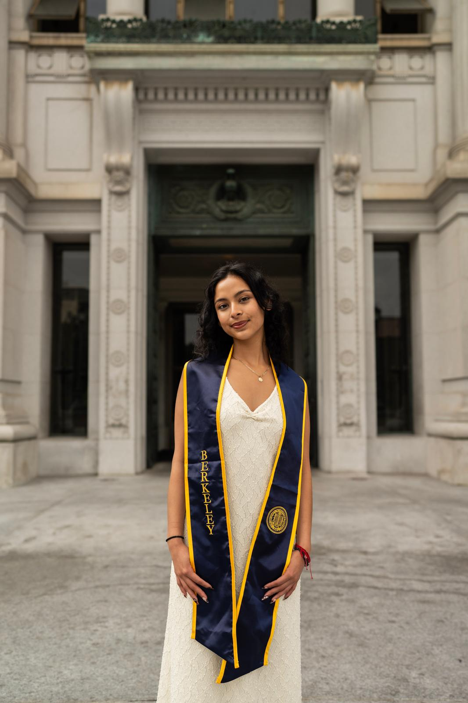
University of California, Berkeley
Mechanical Engineering B.S. 25'/M.S. 26'
The Berkeley Certificate in Design Innovation
My focus is on the intersection of design and functionality to create innovations that improve daily quality of life. I have experience across the entire design process and deeply value each stage, from early conception to manufacturing and testing. As a teaching assistant for an undergraduate design course, I guide students through hands-on, iterative design, which inspires my projects and hobbies. My interests include biomedical and healthcare applications, product development, R&D, and textiles.
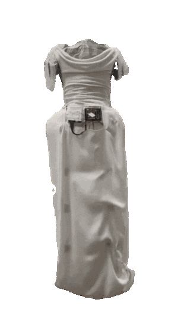
Short gallery walk through of my recent experience
Designing Soft Wearables For Menopause Fatigue: Researched how fatigue and exhaustion surface across menstrual life stages using somatic body-journaling data to design wearables
Stride Recover: a wireless smart rehabilitation sleeve that uses EMG sensing to monitor hamstring recovery in real time.
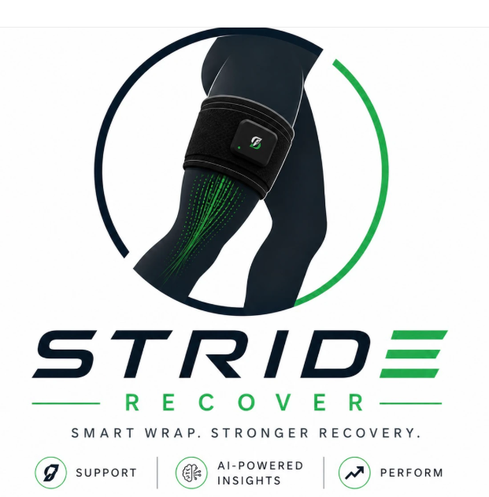
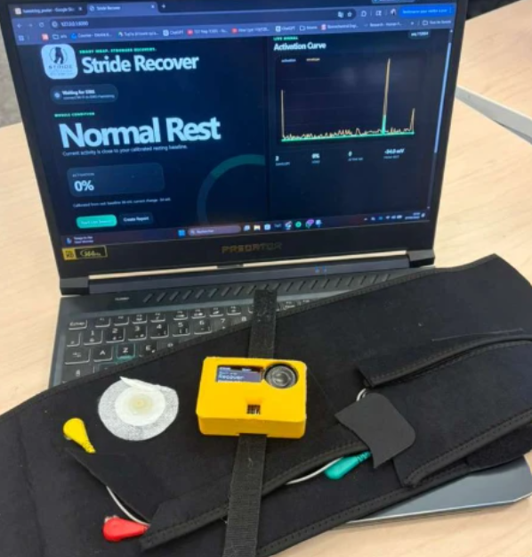
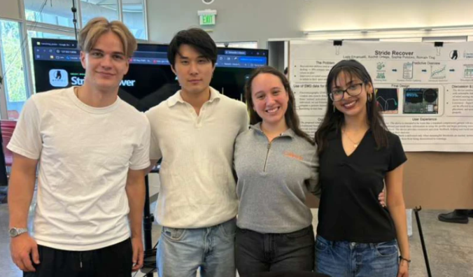
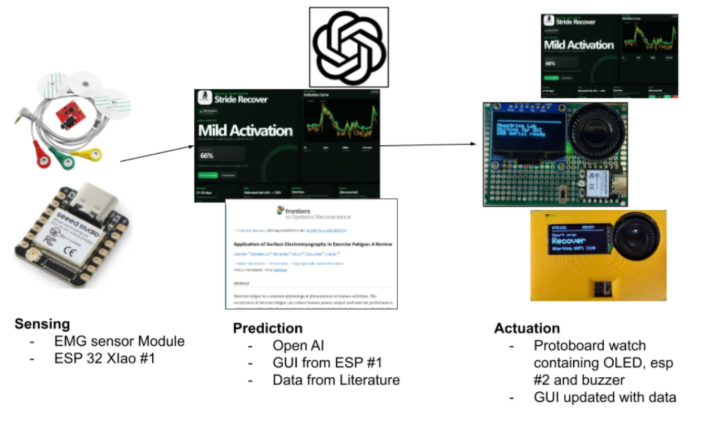
Formaflow: A Morphing Wearable That Lifts for Mobility and Expression
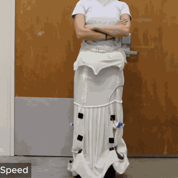
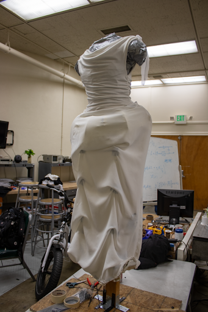
Gyroscope Glove for Reducing Hand Tremors
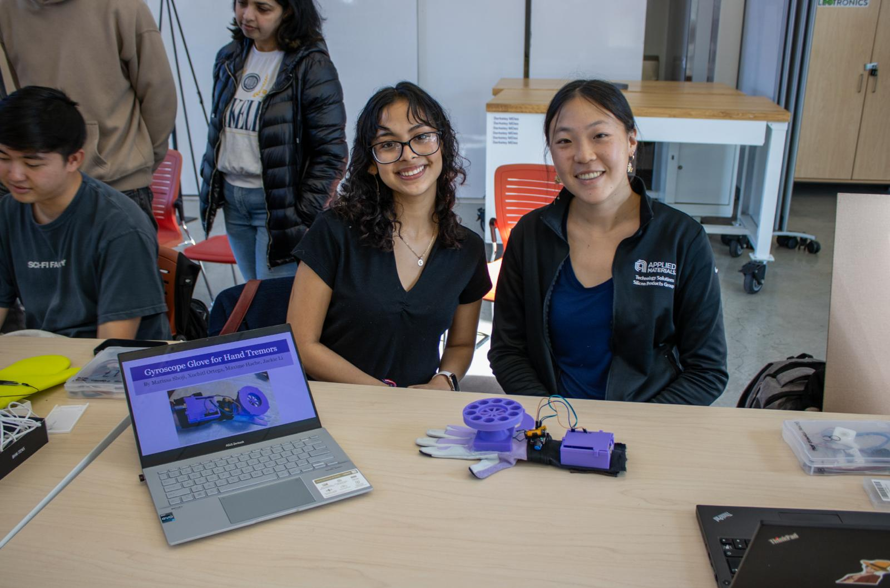
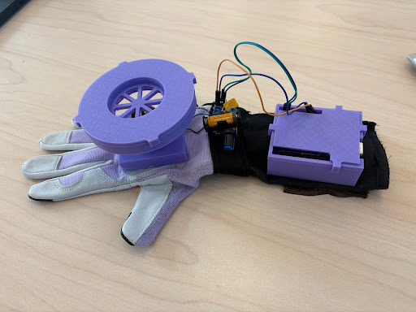
BahaWatch: Disaster Resilience Tech Solutions in the Philippines through partnership with Bike Scouts
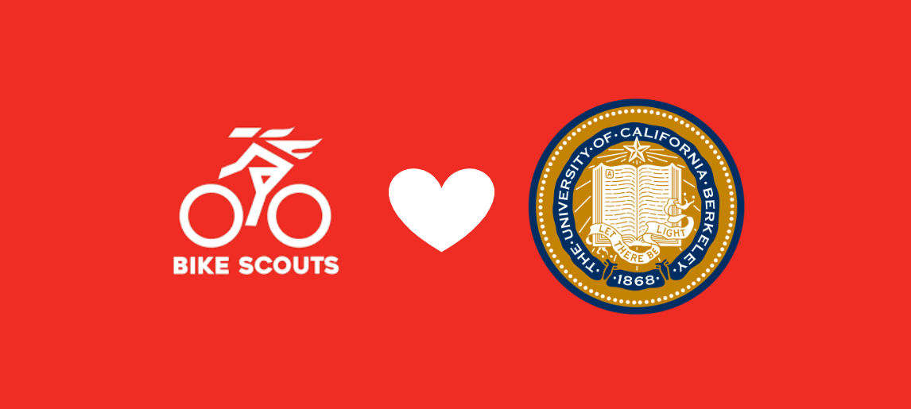
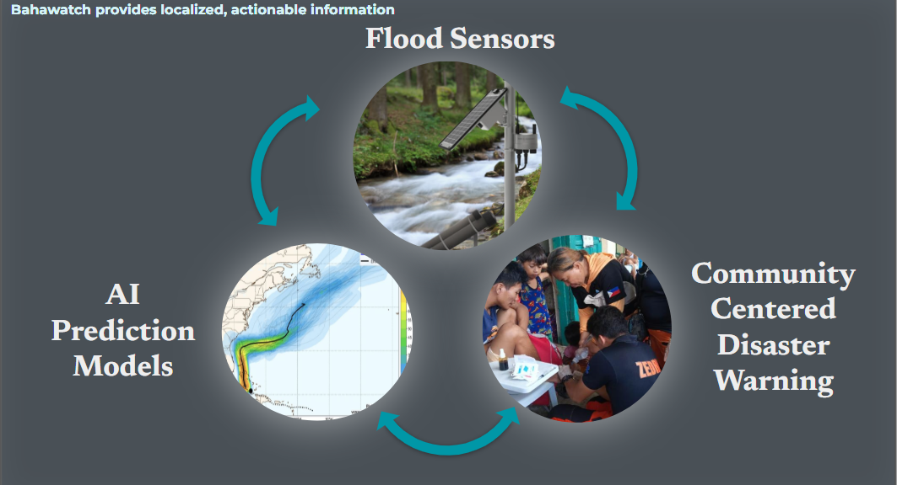
Direct Joule Synthesis of Multi-Metallic Compounds for CO2 Conversion Catalysis
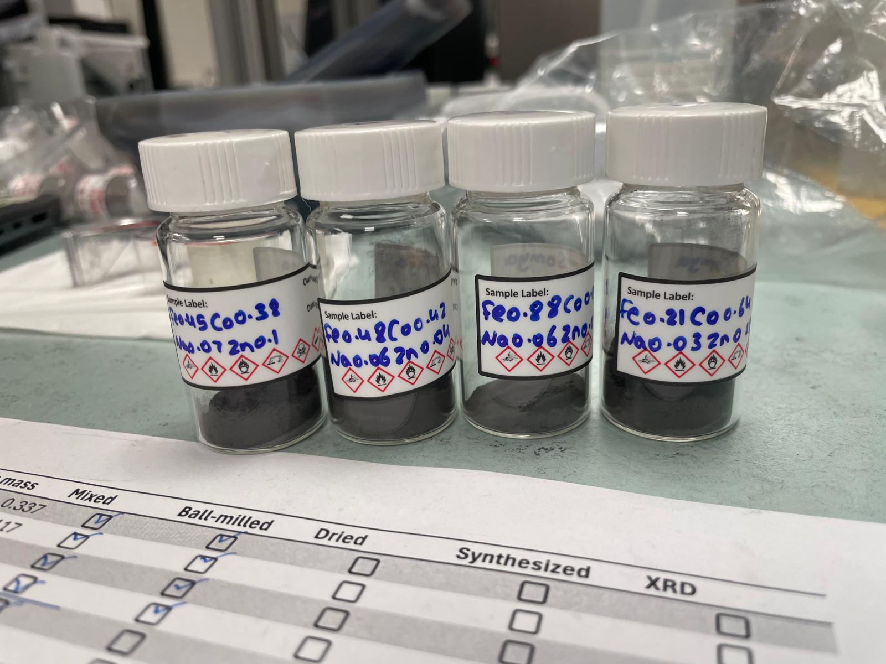
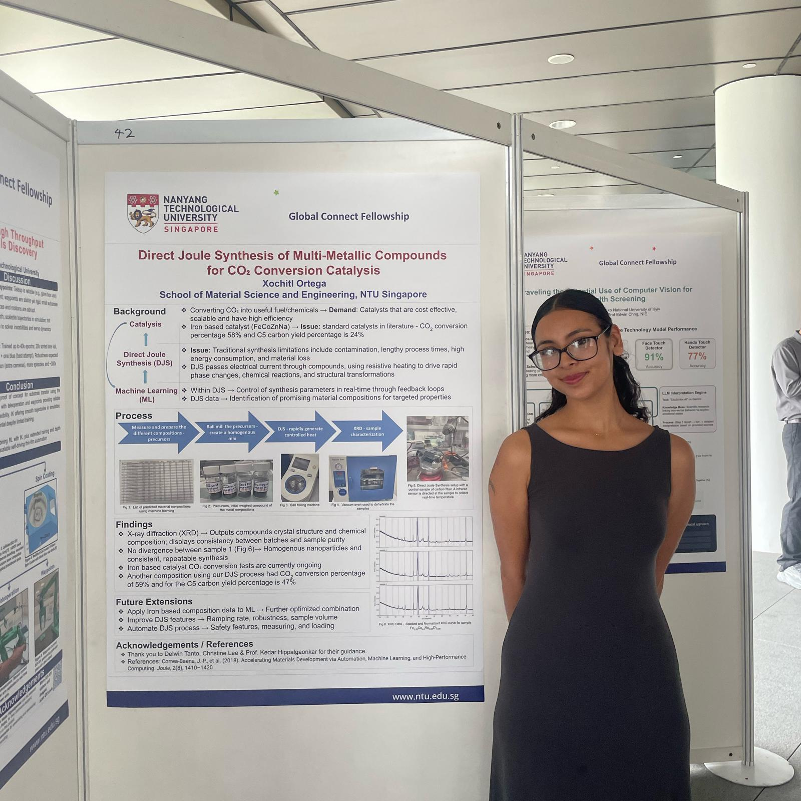
Performance of Polyester Polyurethane Foam in Controlled Environments to Understand Materials in BiPAP/CPAP Devices
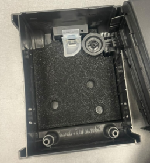
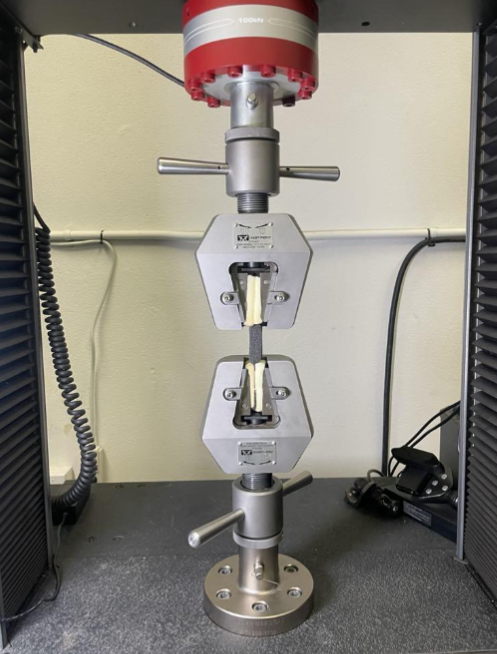
EchoHand: A robotic hand that mimics a users live movements using computer vision
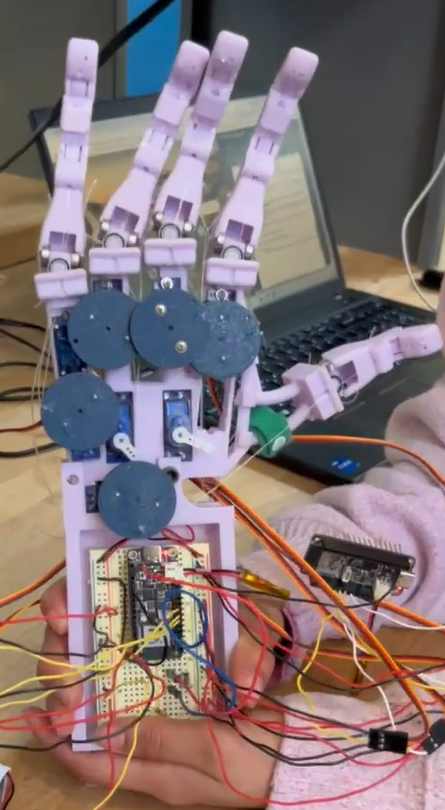
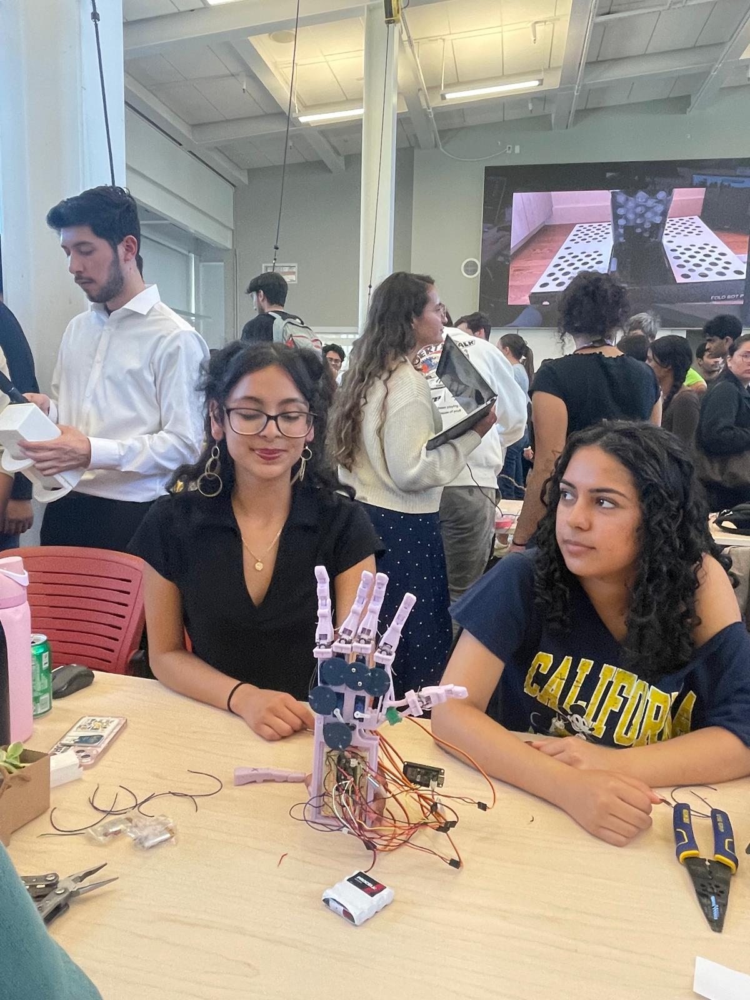